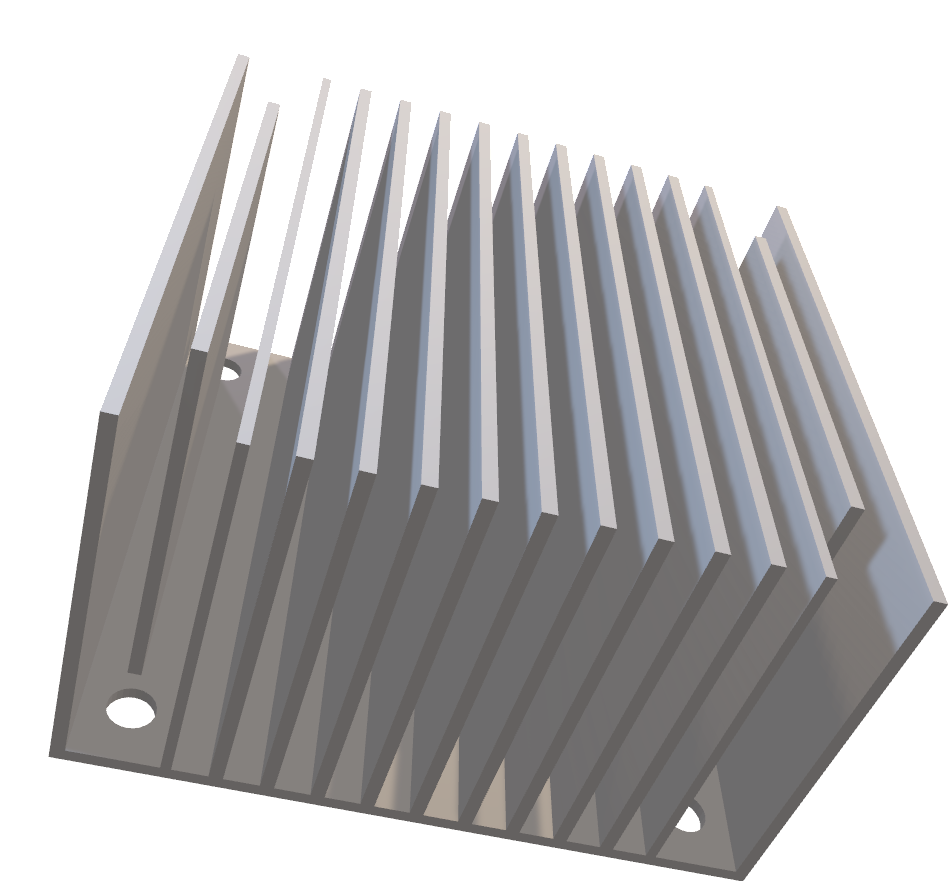

Heat sink for a 100 W CPU
- Objective
- Keep a 50.8 mm CPU at or below 85 °C while it dissipates 100 W in 25 °C air, on the existing mounts.
- My contribution
- All of it: concept screening, a MATLAB resistance model, CAD, Fusion 360 thermal study, drawings and report.
- Result
- A 15-fin Al-6061 design predicted at 69.85 °C (MATLAB). Not built or bench tested; the case study shows where the prediction could be wrong.